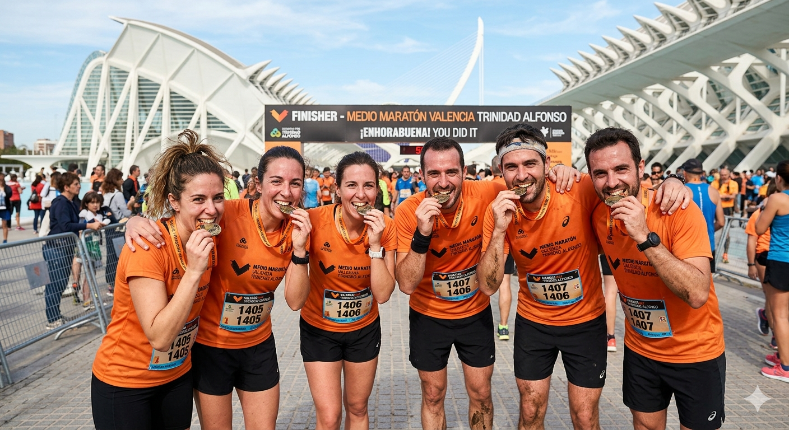
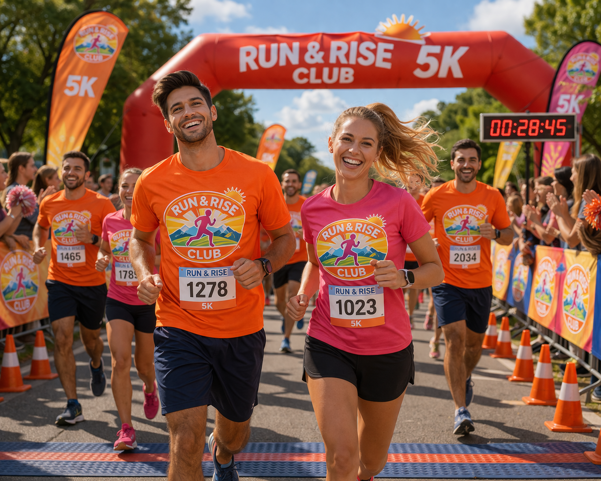

 Competición Media Maratón Valencia 2024 Un viaje inolvidable donde 15 miembros del club cruzaron la meta batiendo sus marcas personales.
 Evento Propio Carrera 5K Aniversario Celebramos nuestro segundo año como club con una carrera popular y un gran desayuno posterior.
Comunidad Quedada Solidaria Navidad Corrimos por una buena causa recogiendo alimentos y compartiendo la alegría de las fiestas.
Épica Maratón de Madrid 2024 La conquista de la capital. Un desafío inolvidable por las calles de Madrid.